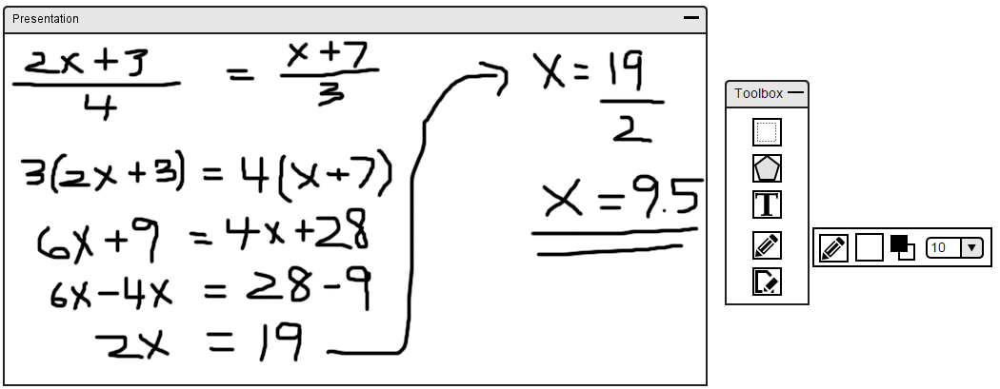

2.7.5. Classroom Interaction
As shown in Section 2.7.2, a student submitted a question to the instructor and is also shown in the classroom chat. The instructor notices that a student has asked a question through the instructor's roster since there is a question mark next to user's name as shown in Figure 98.
Figure 98: Roster Question Queuing.
The instructor then decides to see if any of the students knows the solution to the question by checking the classroom chatroom. A student, Tammy, seems to know the solution as shown in Figure 99.
Figure 99: Student replying to a question through the classroom chat.
The instructor decides to give the student, Tammy, the ability to draw as shown in Figure 100. The instructor also decides to add a new layer to the current slide and changing the background opacity to 100% so the layer can become a whiteboard for the student, Tammy, to draw on as shown in Figure 101.
Figure 100: Student obtaining drawing privilege.
Figure 101: Changing background opacity to 100%.
The student then goes to the toolbar and selects the draw tool and starts solving the problem as shown in Figure 102. All students are able to see it on their screen if they are synced to the instructor's presentation. If not, the layer will be available for the student under the specific slide the instructor has the layer under.

Figure 102: Whiteboard Interacation
Prev: private-chat
| Next: [none]
| Up: chatbox
| Top: index